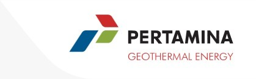
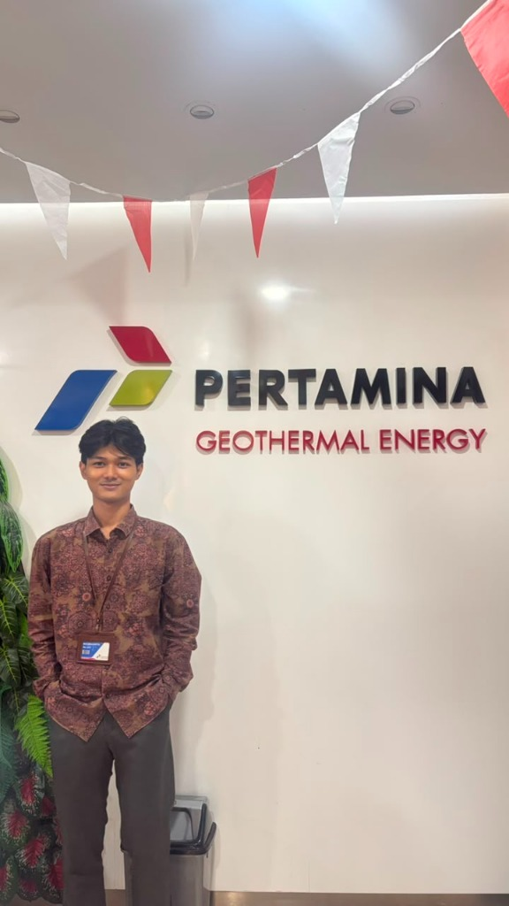

Arfazzikri Ramadhani
Enhancing Operational Efficiency & Safety with an Analytical Approach.
Industrial Engineering student with practical experience in Occupational Health & Safety (K3/HSE) and Ergonomics. Combining data-driven analysis (simulation, statistics, facility layout planning) with proven leadership in managing large-scale programs.
Bridging Analytical Rigor & Operational Safety
Dedicated to optimizing industrial workflows, ensuring occupational safety compliance, and driving data-backed ergonomics.
Hello! I am an Industrial Engineering Student with practical experience in Occupational Health & Safety (K3/HSE), Operations Research, and Ergonomics.
My methodology links data-driven quantitative simulation in AnyLogic, statistical modeling in SmartPLS, and algorithmic facility layout planning (ALDEP, CRAFT, BLOCPLAN) with structured safety analysis frameworks including HIRADC, HAZOP, and BowTie risk mapping.
Beyond engineering analysis, I have demonstrated leadership in managing large-scale student community programs and maintaining legislative governance archives.
Signature Tools & Ecosystem
Official engineering software, statistical modeling suites, risk assessment tools, and productivity platforms.
AutoCAD
2D drafting and 3D geometric modeling for plant layouts, machine tooling, and ergonomic product blueprints.
AnyLogic
Discrete event, agent-based, and system dynamics simulation for queue reduction and throughput optimization.
SmartPLS
Structural equation modeling, multivariate statistical validation, and empirical hypothesis testing for research.
Excel & VBA
Automated industrial calculation models, inventory EOQ trackers, and customized operational macro dashboards.
Microsoft Project
Work breakdown structures (WBS), Gantt chart scheduling, critical path analysis, and resource levelling.
Notion
Structured standard operating procedure (SOP) documentation, project trackers, and engineering knowledge base management.
BowTie & HIRADC
Risk barrier mapping, hazard identification, HAZOP worksheets, and emergency mitigation control methodologies.
Antigravity
AI agentic workflows, autonomous data processing scripts, automated reporting, and accelerated code prototyping.
Experience
Hands-on application of risk assessments, safety compliance, and hazard evaluations in energy infrastructure.

HSE & Operations Intern
Assisted in preparing and reviewing comprehensive Hazard Identification, Risk Assessment, and Determining Control (HIRADC) and Job Safety Analysis (JSA) documents covering 24 nodes from the HAZOP Worksheet. Analyzed Major Accident Hazards (MAH) and conducted structured Bowtie risk mapping across 16 MAH items. Actively participated in on-site safety audit observations and reviewed the company's Emergency Response Procedures (ERP) to reinforce occupational safety standards.

Project
Technical engineering prototypes, hardware development, and peer-reviewed journal research.
Academic Researcher — PROFISIENSI Journal
Published research in PROFISIENSI Journal (Dec 2024) establishing standard production time and improving labor efficiency using the Stopwatch Time Study method to eliminate bottlenecks.
3D-Printed Phone Holder Prototype
Engineered and 3D-printed a functional ergonomic phone holder prototype for an integrated industrial practicum project using AutoCAD with geometric dimensioning & tolerancing.
Arduino-Based Timer Device
Constructed an Arduino-based operational timer device for precise cycle-time measurements, work station process tracking, and industrial data logging.
Organizational Experience
Demonstrated track record of team leadership, large-scale program coordination, and administrative governance.
Project Officer — SATURN
Oct 2024 – Jan 2025Led and orchestrated a social community empowerment program, successfully engaging 50+ children and managing a comprehensive financial budget of over Rp12,600,000.
Administrative Bureau — MPM
Jan 2025 – Jan 2026Majelis Permusyawaratan Mahasiswa: Drafted, cataloged, and archived 500+ legislative documents with high precision. Recognized as Best Staff for outstanding bureaucratic excellence.
Secretary — PKKMB-FT
Jul 2025 – Aug 2025Facilitated and optimized the administration and registration workflow for 300+ incoming engineering students, ensuring seamless participant verification and database accuracy.
Secretary — PORTI
May 2024 – Jul 2024Managed end-to-end event correspondence, official permits, meeting minutes, and systematically maintained internal administrative archives across the committee lifecycle.
Hard & Soft Skills
Structured breakdown of technical quantitative abilities and professional leadership qualities.
Simulation & Modeling
Process simulation, discrete-event modeling, and agent-based system dynamics using AnyLogic.
Statistical Analysis
Quantitative structural equation modeling, hypothesis testing, and multivariate analytics using SmartPLS.
Facility & Layout Planning
Plant layout design, material flow optimization, and spatial efficiency algorithms (ALDEP, CRAFT, BLOCPLAN).
Supply Chain & Inventory Analysis
Inventory control models, Economic Order Quantity (EOQ), reorder points, and dynamic Safety Stock optimization.
Data Tools & Reporting
Data automation, quantitative reporting dashboards, and macro scripting using Excel VBA.
Safety & Risk Analysis Tools
Structured hazard evaluation frameworks: HIRADC, FMEA, HAZOP, and BowTie risk mapping.
Analytical & Problem-Solving
Root-cause analysis, data-backed decision making, process bottleneck diagnosis, and systematic troubleshooting.
Collaboration & Communication
Cross-functional team coordination, technical documentation drafting, stakeholder presentation, and organizational agility.
Self-Management
Disciplined prioritization, milestone tracking, resource budgeting, adaptability, and high attention to detail.
Domain-Specific (K3 / HSE)
Deep familiarity with occupational safety regulations, hazard mitigation protocols, ergonomic standards, and emergency preparedness.
Let's Connect & Collaborate
Open for industrial engineering opportunities, HSE roles, research discussions, and professional networking.
Email Address
LinkedIn Profile
Location
Jakarta Timur, Indonesia